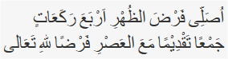
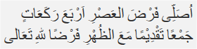

Sholat Jama'
Sholat Jama'
Shalat duhur dahulu empat rakaat kemudian salat asar empat rakaat, dilaksanakan pada waktu duhur. Tata caranya sebagai berikut: Berniat salat duhur dengan jamak takdim. Bila dilafalkan yaitu:  ”Ushalli fardhadh dhuhri arba'a raka'aatin jam'an taqdhiman ma'al ashri fardhal-lillaahi-ta'aala” Artinya: ”Saya niat salat salat duhur empat rakaat digabungkan dengan salat asar dengan jamak takdim karena Allah Ta’ala” Berdiri lagi dan berniat salat yang kedua (ashar), jika dilafalkan sebagai berikut:  ”Ushalli fardhal ashri arba'a raka'aatin jam'an taqdhiman ma'adh-dhuhri fardhal-lillaahi-ta'aala” Artinya: “Saya niat salat asar empat rakaat digabungkan dengan salat duhur dengan jamak takdim karena Allah ta’ala. Takbiratul Ihram Salat asar empat rakaat seperti biasa. Salam. Catatan: Setelah salam pada salat yang pertama harus langsung berdiri,tidak boleh diselingi perbuatan atau perkataan misalnya zikir, berdo’a, bercakap-cakap dan lain-lain).
Jama' Takdim
Cara Melaksanakan Salat Jamak Takdim, Dhuhur dengan Ashar